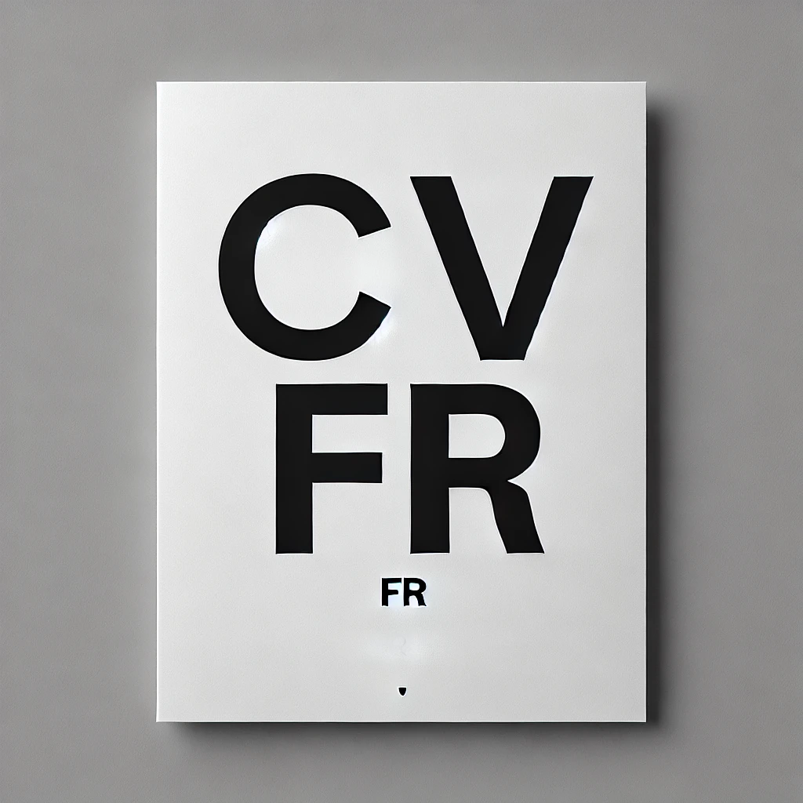
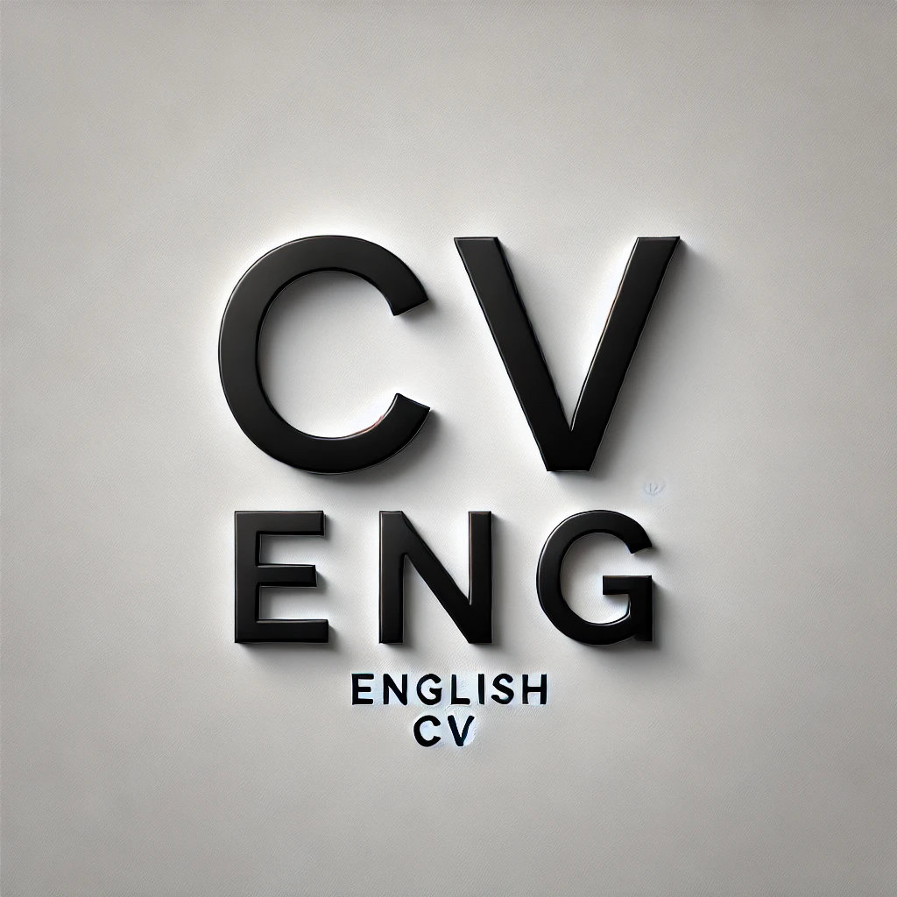
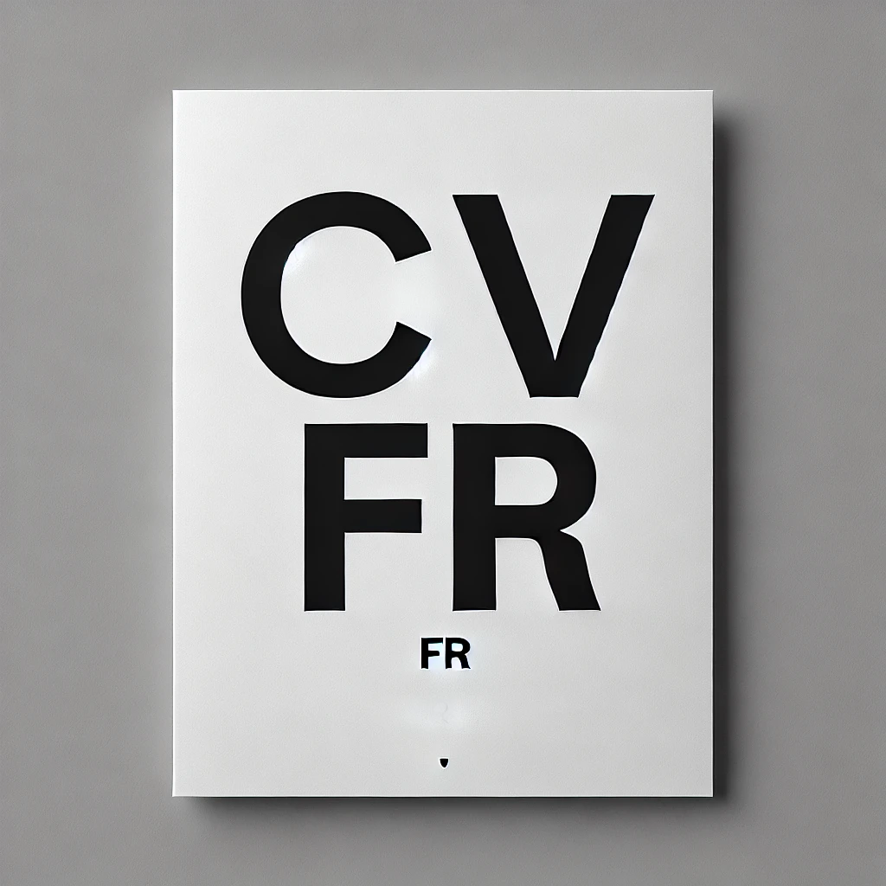
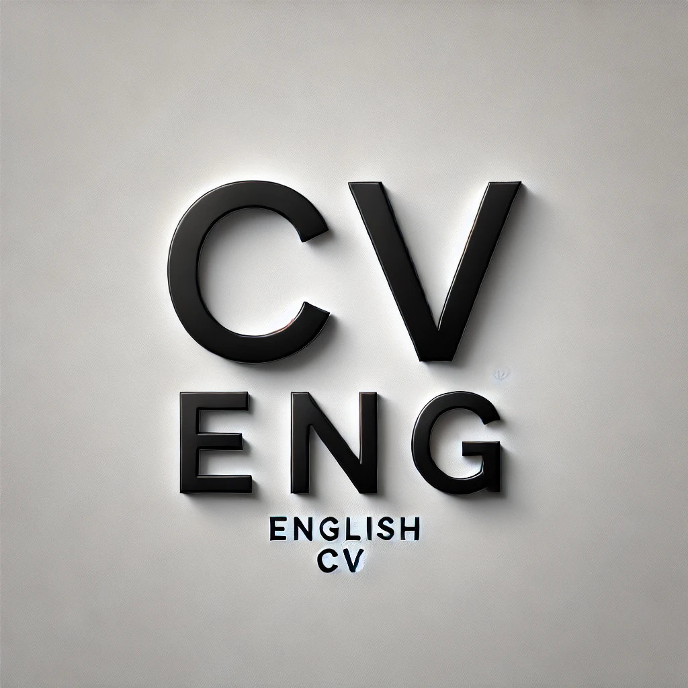

Abderahmène Foufa
Étudiant Ingénieur à l'ENSEEIHT

Étudiant Ingénieur à l'ENSEEIHT
Étudiant Ingénieur à l'ENSEEIHT, passionné par la science numérique et les nouvelles technologies.
Sciences du Numérique : exploration des algorithmes, de la data science, et de l'IA.
Projets : développement de solutions innovantes pour améliorer la productivité et la collaboration.
Mail : foufa.amine.30@gmail.com
Tél : 0621587666
 



Découvrez les interviews récentes sur divers sujets intéressants.
Création d'un site web complexe pour simplifier la gestion et l'utilisation de l'équipement solaire destiné à la vente.
Développement d'une application permettant de connaître la disponibilité des places de stationnement dans les grandes villes.
Participation à la création d'un jeu où le temps de jeu aide à soutenir des causes écologiques et humanitaires via un système de publicité intégré.